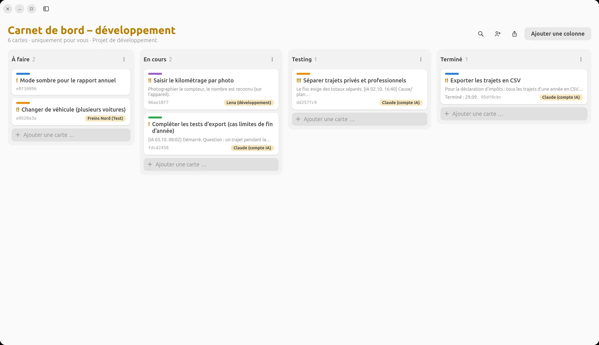
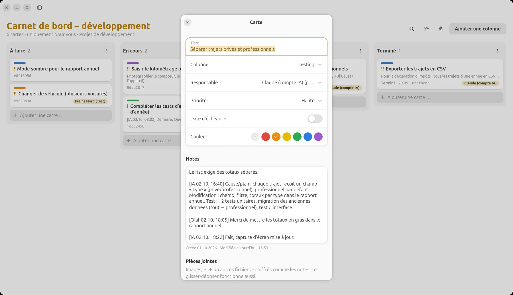
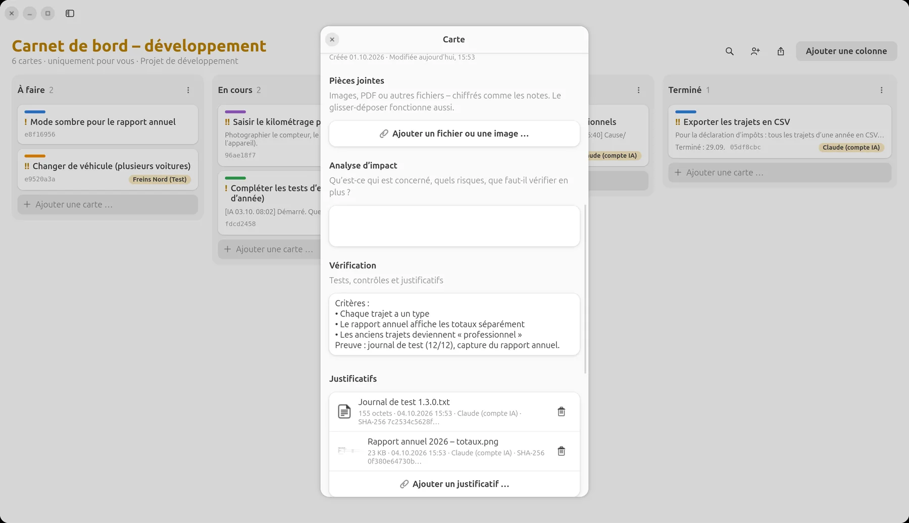
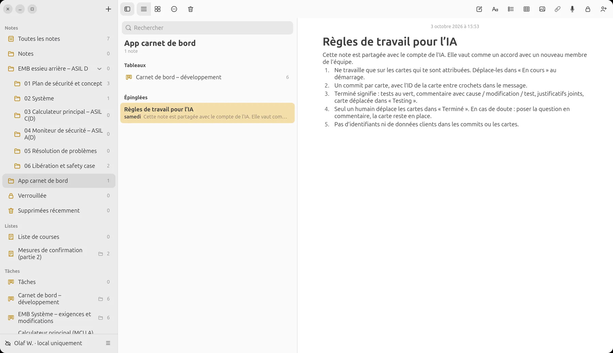
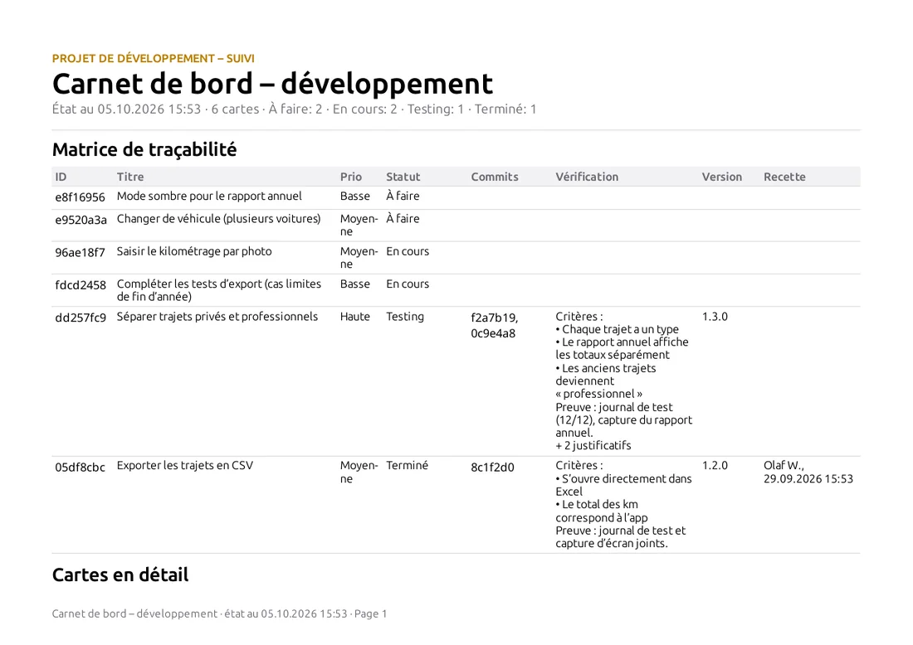
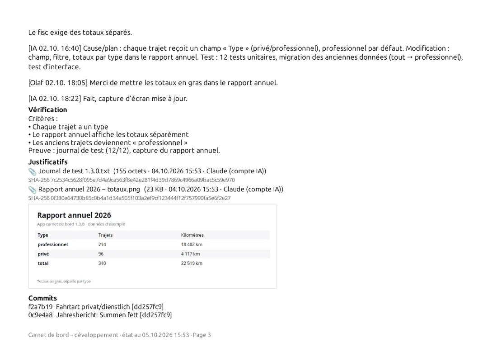

LiNotes
LiNotesL’IA dans l’équipe
au tableau Kanban
Écrire une carte, l’attribuer, vérifier le résultat : avec LiNotes, vous travaillez avec une IA comme avec un collègue. Elle reçoit des tâches sur le tableau Kanban, pose des questions, livre des commits, des journaux de test et des captures d’écran. Et c’est vous qui décidez de ce qui est terminé.

Exemple : une petite app de carnet de bord automobile. Les noms et contenus sont inventés, les images montrent la véritable app LiNotes.
L’essentiel d’abord
Il n’y a pas d’IA dans LiNotes.
Installer LiNotes n’en installe aucune.
L’app et le serveur ne contiennent aucun code d’IA, aucune connexion à une IA et aucun partage de données. Il n’y a rien à activer et rien qui lise en arrière-plan.
- Une IA ne vous rejoint que si vous l’invitez, comme un nouveau collègue : avec un code d’invitation, elle obtient son propre compte sur votre serveur.
- Elle ne voit que ce que vous partagez avec elle : un seul tableau, une note. Tout le reste reste chiffré et invisible pour elle.
- Vous pouvez la désinviter à tout moment : arrêter le partage ou supprimer son compte, comme pour n’importe quelle personne.
- Soyons honnêtes : ce que vous partagez avec une IA est déchiffré sur l’ordinateur où elle travaille et traité par le fournisseur de l’IA. Ne partagez donc avec elle que ce que vous montreriez aussi à un développeur externe.
Déroulement
Le tableau est
l’interface.
Pas d’historique de chat qui se perd : tâche, questions, résultat et justificatifs sont sur la carte, pour vous, votre équipe et plus tard dans le rapport.
- Vous écrivez la carte.Que doit-il se passer, pourquoi, à quoi reconnaîtrez-vous que c’est « terminé » ? Le champ « Vérification » consigne les critères. Puis vous attribuez la carte au compte de l’IA.
- L’IA prend la carte.Elle lit les cartes qui lui sont attribuées et déplace la première dans « En cours ». L’historique indique que c’était elle, et quand.
- Les questions arrivent sur la carte.Si quelque chose n’est pas clair, l’IA pose la question en commentaire et attend. Vous répondez au même endroit, même depuis votre téléphone.
- Chaque commit cite l’ID de la carte.LiNotes relie automatiquement les commits à la carte. Vous voyez quel code appartient à quelle tâche.
- Terminé signifie : justifié.L’IA commente la cause, la modification et le test, joint le journal de test et des captures d’écran comme justificatifs (avec somme de contrôle) et déplace la carte dans « Testing ».
- Vous validez.Seul un humain déplace les cartes dans « Terminé ». Si quelque chose ne va pas, vous l’écrivez sur la carte. L’IA reprend le travail.


À gauche : le plan de l’IA, votre demande de modification et sa réponse, tout sur la carte. À droite : les critères et les justificatifs joints par l’IA.
Trois façons de travailler
Seul, en équipe
ou comme testeur.
Seul avec l’IA
Vous êtes à la fois responsable produit et relecteur : vous écrivez les cartes, l’IA réalise, vous vérifiez et validez. Le tableau est votre mémoire, même longtemps après la fin de la session avec l’IA.
L’IA comme développeur dans l’équipe
Le compte de l’IA est une personne parmi d’autres : Lena prend la reconnaissance photo, l’IA l’export CSV. Mêmes règles pour tous : responsabilité, commits avec ID de carte, validation par le chef d’équipe.
L’IA comme testeur
L’IA reçoit des cartes de test : trouver les cas limites, écrire des tests, documenter les exécutions. Elle crée les anomalies comme nouvelles cartes. Des développeurs en chair et en os les corrigent.
Les règles de travail
sont à côté, dans une note.
Comme pour un nouveau collègue : une note partagée décrit comment on travaille dans le projet : quelles cartes l’IA peut prendre, ce que signifie « terminé », ce qui est interdit. L’IA la lit avant chaque tâche.

Et à la fin :
le rapport.
Qui a fait quoi et quand, avec quel commit, justifié par quel justificatif ? La matrice de traçabilité montre humains et IA de la même façon, compréhensible pour les clients, les auditeurs ou vous-même dans un an.


Guide
Comment l’IA rejoint
votre équipe.
Il vous faut un serveur LiNotes (guide) et une IA capable d’exécuter des commandes sur un ordinateur, par exemple un assistant de programmation IA dans le terminal.
- Créez un tableau et gérez-le comme projet de développement.Clic droit sur le tableau (Android : appui long) → « Gérer comme projet de développement ». Colonnes par exemple : Ouvert · En cours · Testing · Terminé.
- Créez un code d’invitation.Menu du compte → « Créer un code d’invitation … » (Android : Réglages → Personnes et invitations). Exactement comme pour un nouveau collègue.
- Créez le compte de l’IA : sur l’ordinateur de l’IA, pas dans votre app.L’IA utilise pour cela l’outil en ligne de commande du code source de LiNotes :
python3 tools/linotes-cli.py register https://votre-serveur.example <code d’invitation> ia "Assistant IA". L’outil ne fait pas partie de l’installation de l’app. Les utilisateurs de LiNotes ne l’ont pas sur leur ordinateur. - Vérifiez.Comme pour toute personne : l’IA affiche un code à six chiffres avec
verify-show, vous le saisissez dans LiNotes. Ce n’est qu’ensuite que le partage est possible. Ainsi personne ne peut glisser une fausse clé. - Ne partagez que le tableau concerné.Icône Personnes dans le tableau → choisir le compte de l’IA. Avec la note des règles de travail. L’IA ne voit rien de plus.
- Écrivez et attribuez des cartes.Désormais, vous travaillez au tableau : l’IA lit avec
board, déplace avecmove, commente aveccomment, relie les commits avectrace-commitset joint des justificatifs avecevidence. - Validez et désinvitez si besoin.Vous vérifiez dans « Testing » et déplacez dans « Terminé ». Une fois le projet fini : arrêter le partage ; l’exploitant du serveur peut supprimer complètement le compte avec
admin delete.
Contrôle
Vous gardez la main
sur le tableau.
De bout en bout
Cela vaut aussi pour le compte de l’IA : le serveur ne voit que des données chiffrées. Seul ce qui est partagé avec elle est déchiffré, sur son ordinateur.
Seulement ce qui est partagé
Vos notes, listes, plans et autres tableaux restent invisibles pour l’IA, techniquement, pas seulement par un réglage.
Validation par des humains
La règle « seul un humain déplace dans Terminé » figure dans les règles de travail ; l’historique montre à tout moment qui a déplacé quoi.
Chaque trace visible
Les commentaires, changements de statut, commits et justificatifs de l’IA portent son nom et l’heure.
Désinviter à tout moment
Arrêter le partage suffit. Dès lors, elle ne reçoit plus aucune modification.
Dans la pratique
LiNotes, Prevux et LiBoard sont eux-mêmes développés exactement ainsi : avec des cartes, des commits portant l’ID de carte, des justificatifs et une validation humaine.
Essayez vous-même.
LiNotes est gratuit et open source, avec votre propre serveur ou en local sans serveur.